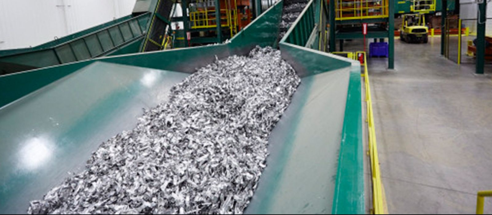

Sourcing
Identification and procurement of suitable materials according to the requirements of the buyer.
- Clarification of material, quality and tolerances
- Search within our supplier network
- Review of specification, packaging and delivery region
Services
Three clearly separated tasks. Together they cover the way from a buyer’s requirement to a transaction the parties can agree between themselves.
Identification and procurement of suitable materials according to the requirements of the buyer.
Bringing together suitable suppliers and industrial buyers on the basis of material, quality, quantity and delivery region.
Support with communication, coordination and the preparation of trade transactions.
Process
Four steps. The commercial agreement itself stays with the parties involved.
We understand the requirements of the buyer.
We identify suitable sources of supply.
We bring suitable business partners together.
The parties agree the commercial details directly with each other.

Enquiries
The more precise the specification, the faster the answer. Missing details are clarified with you.
Which material, which grade, which tolerances and impurities are acceptable.
Single lot or recurring volume, and the period it refers to.
Where the material has to go and which delivery terms apply.
Required packaging, documentation and, where relevant, analysis.
Tell us what you are looking for. We will review your requirements and identify potential supply opportunities.